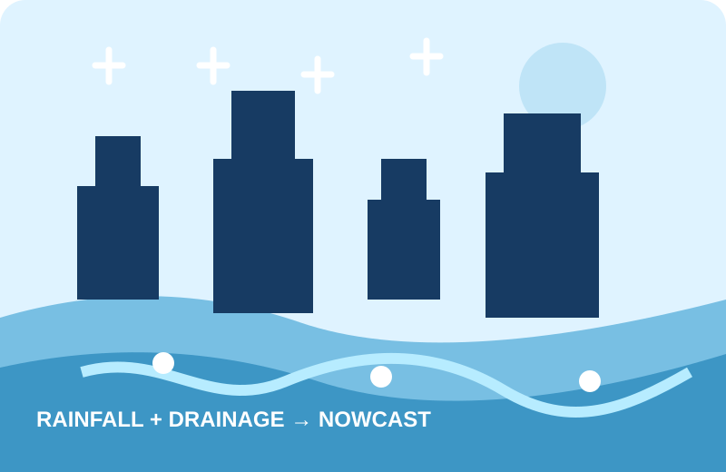
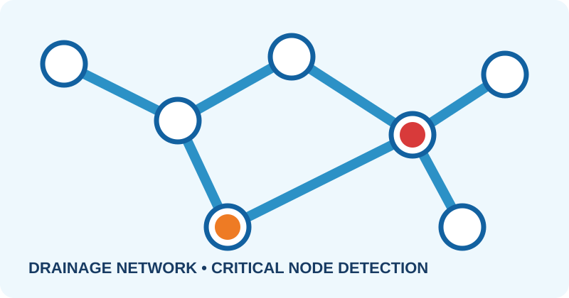

Predict flooding before it happens.
FloodNow AI couples rainfall intensity with drainage-network capacity to deliver short-horizon urban flood nowcasts, risk maps and early warnings.
● DEMO MODE — simulated live data for hackathon demonstration.

One platform. Four intelligence layers.
Convert rainfall observations and drainage conditions into an actionable flood-risk forecast.
Rainfall Intelligence
Track current intensity and near-term rainfall forecasts from radar or weather APIs.
Drainage Coupling
Compare incoming rainfall load with drainage capacity, water levels and critical nodes.
Flood Nowcasting
Generate 15, 30 and 60-minute risk forecasts with location-based alerts.


Rainfall alone is not enough.
Urban flooding depends on how quickly rain arrives and how much water the drainage system can safely carry. FloodNow AI combines both signals in a single operational view.
Observe
Rainfall, water
level and drainage telemetry.
Couple
Estimate load
versus local drainage capacity.
Act
Prioritize zones and
send early warnings.